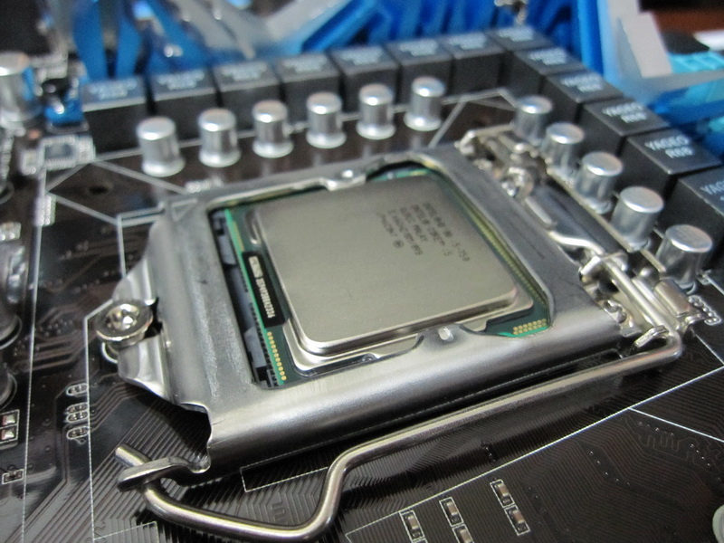
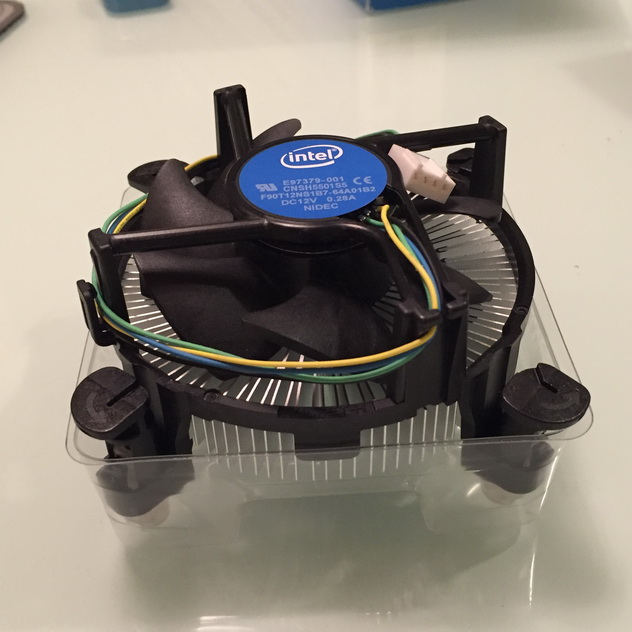

以下為這次組裝電腦配備，首先是電源供應器BE QUIET! 580W
再來是所有零組件的家，機殼使用CoolerMaster SGC-2000 偵察兵
側板留了兩個風扇位置，可自行加裝風扇
前置面板的接線，跟風扇電源線都藏在後側背板
先裝電源供應器，裝好後記得開關關成O
主機板華碩P7P55D-ELGA1156，指1156腳位，支援USB3.0、SATA3 6GB/S、雙顯卡
CPU的小窩，等等就要住進去了
主機後方面板，該有的都有了E SATA、IEEE 1394，光纖…等
處理器 CPUI5 750 LGA1156
CPU的窩，將上蓋打開後裡面有一隻一隻的PIN，不要好奇去碰它
CPU都有防呆設計，對清楚正面後就輕輕放下它吧
再將上蓋蓋回來，牢牢將拉桿扣住。
主機板正面，裝上散熱器。
裝好後，附近注意看看
一定會有一個CPU FAN
用來揷CPU風扇的4PIN揷座 將風扇電源線插上
插入記憶體
將POWER的主機板電源供應線24PIN接上，在記憶體旁，如下圖
將CPU獨立電源接上，4PIN或是8PIN，如下圖
光碟機基本型的就好
硬碟的話是1TB 雙處理器
安裝過程幾乎都有防呆插孔 不怕插錯
這樣就完成組裝電腦嚕！
記得還要灌入系統才能使用哦！